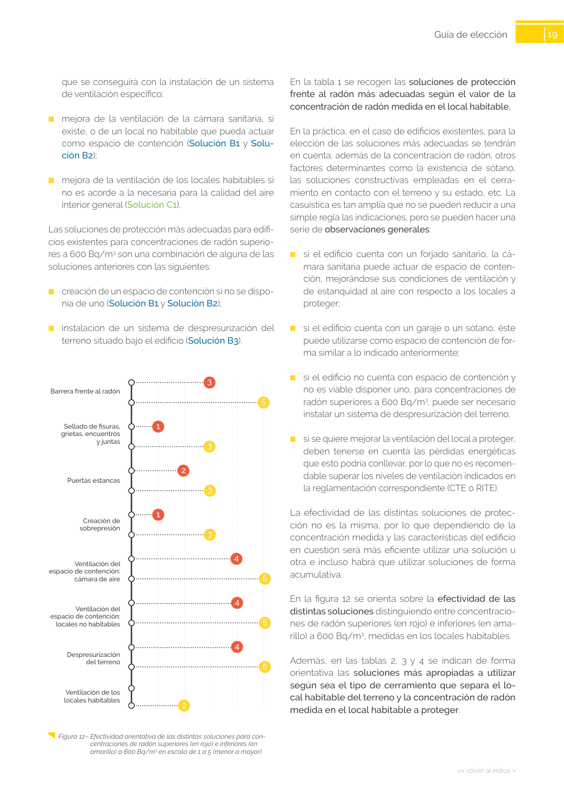

<!doctype html>
<html lang="es"><head><meta charset="utf-8">
<meta name="viewport" content="width=device-width, initial-scale=1">
<title>GUIA · Página física 19</title><link rel="stylesheet" href="../estilo.css">
</head><body>
<nav><a href="../index.html">Índice</a> › <a href="../doc/guia-pdf-23d2f2198c3b-sin-fecha-6765d0c34c51.html">GUIA</a></nav>

<h1>GUIA · Página física 19</h1>
<header class="meta"><p><strong>Guia de rehabilitacion frente al radon</strong> · edición sin-fecha · capa guia</p>
<p>Documento <code>GUIA-PDF-23d2f2198c3b</code> · SHA-256 del PDF <code>6765d0c34c51fbe193c3ed0c1378b710f98f086d16e2b68fc28ed36e143fdaea</code></p>
<p>Página física 19 de 24.</p>
<p><a href="../../contenido/docs/GUIA-PDF-23d2f2198c3b/sin-fecha__6765d0c34c51/fuente.pdf#page=19">Copia fiel del PDF fuente</a> · <a href="https://www.codigotecnico.org/pdf/GuiasyOtros/GuiaRadon/Guia_de_rehabilitacion_frente_al_radon.pdf">Fuente oficial</a></p>
<p><a href="https://www.codigotecnico.org/Guias/GuiaRadon.html">Ficha de la disposición en la fuente oficial</a></p>
<div class="cita"><p><a href="../../contenido/docs/GUIA-PDF-23d2f2198c3b/sin-fecha__6765d0c34c51/fuente.pdf#page=2">Créditos y autoría en el PDF fuente</a>. Reproducción con cita de fuente y autores.</p>
<p>Permiso literal: Se permite la reproducción total o parcial del contenido de este do­ Edición actual: septiembre 2020 cumento siempre y cuando se cite la fuente original y a sus autores.</p>
<details><summary>Leer los créditos completos y la autoría</summary><pre class="literal">                                                                                                  2


                                                                     Este documento ha sido elaborado por el Instituto de ciencias
                                                         de la construcción Eduardo Torroja (IETcc) bajo la supervisión
                                                         de la Dirección General de Agenda Urbana y Arquitectura del
                                                                             Ministerio de Transportes, Movilidad y Agenda Urbana (MITMA).

                                                             SECRETARÍA GENERAL DE
                                                  AGENDA URBANA                                                                     Y VIVIENDA                              MINISTERIO            GOBIERNO                                                                              El IETcc, perteneciente al Consejo Superior de Investigaciones                          DE                               TRANSPORTES,                                          MOVILIDAD
            DE ESPAÑA      Y                         AGENDA                                URBANA                                                        DIRECCIÓN                                                                GENERAL                                                                      DE
                                                  AGENDA URBANA Y ARQUITECTURA                   Científicas (CSIC), es el centro de investigación en edificación
                                                         de referencia en España. La Unidad de Calidad en la Construc­
                                                                       ción del IETcc asesora al MITMA en la elaboración del Código
                              MINISTERIO            GOBIERNO                         DE                               CIENCIA                                             Técnico de la Edificación que, desde el año 2019, cuenta con la            DE ESPAÑA                                E INNOVACIÓN
                                                                   sección HS6 Protección frente a la exposición al radón.

                                                                    Dirección y Coordinación:
                                                                            Ministerio de Transportes, Movilidad y Agenda Urbana
                                                                           Isabel Marcos Anasagasti
Esta publicación está formada por una serie de documentos cuyo       Raquel Lara Campos
objetivo es constituir una herramienta de ayuda para el diseño de       Eduardo González de Prado
soluciones de protección frente al radón:                                    Instituto de ciencias de la construcción Eduardo Torroja CSIC
                                                                                      Pilar Linares Alemparte
■  Guía de rehabilitación frente al radón

Fichas de soluciones:                                                 Autoras:
                                                                                      Pilar Linares Alemparte
A: De aislamiento del edificio                                                                   Sonia García Ortega
■       Solución A1. Barrera frente al radón
■       Solución A1-1. Barrera frente al radón. Encuentros              Colaboradoras:
■       Solución A2. Sellado de fisuras, grietas, encuentros y juntas         Virginia Sánchez Ramos
■       Solución A3. Puertas estancas                                   Karina Angélica García Pardo
■       Solución A4. Creación de sobrepresión
                                                                               Edita:
B: De reducción del radón antes de que penetre en los locales       Centro de Publicaciones Secretaría General Técnica
  a proteger                                                               Ministerio de Transportes, Movilidad y Agenda Urbana©

■       Solución B1. Ventilación del espacio de contención: cá­                                                                  Entidad colaboradora:
                 mara de aire                                                                Consejo Superior de Investigaciones Científicas · CSIC
■       Solución B2. Ventilación del espacio de contención: loca­                                                                             Ministerio de Ciencia e Innovación
                      les no habitables
■       Solución B3. Despresurización del terreno                        Catálogo de publicaciones de la Administración General
                                                                         del Estado: publicacionesoficiales.boe.es
C: De reducción del radón tras penetrar en los locales a proteger
■       Solución C1. Ventilación de los locales habitables                  Centro virtual de publicaciones del Ministerio de Transpor­
                                                                                         tes, Movilidad y Agenda Urbana: www.mitma.gob.es

Fichas de ejemplos:
                                                                     Página web del Código Técnico de la Edificación:
■      Ejemplo A1+B3. Barrera frente al radón + despresurización          www.codigotecnico.org
                    con red de tubos
■      Ejemplo A2+B1. Sellado + ventilación de la cámara sanitaria      Maquetación y diseño gráfico:
■      Ejemplo A2+B3. Sellado + despresurización con red de tubos       Lapizmente. Estrategia • Diseño Gráfico
■      Ejemplo A2+C1. Sellado + ventilación mecánica de los loca-                                                                     Los contenidos o ideas recogidas en este documento pertenecen a
                          les habitables                                   sus autores. Este documento está basado en el conocimiento dispo­
                                                                                    nible en el momento de su publicación. No se aceptará por las institu­
Publicación completa:                                                    ciones ni los autores implicados responsabilidad de ningún tipo por el
ISBN: 978-84-498-1045-9                                             uso de estas recomendaciones. Las figuras tienen carácter ilustrativo
NIPO: 796-20-136-5                                                   y no deben interpretarse como detalles constructivos.
1ª edición: septiembre 2020                                                               Se permite la reproducción total o parcial del contenido de este do­
Edición actual: septiembre 2020                                    cumento siempre y cuando se cite la fuente original y a sus autores.


                                                                                                                          &gt;&gt; volver al índice &gt;</pre></details></div>
<div class="aviso"><strong>Alcance y límites</strong><ul><li>Extracción automática sin revisión técnica humana completa. Contraste tablas, fórmulas, notas y excepciones con el PDF. La edición disponible no determina la vigencia ni la aplicabilidad a un proyecto.</li><li>Guia o documento divulgativo; no es texto normativo.</li><li>Extracción automática; el cotejo humano está pendiente.</li><li>Semántica y tablas no equivalen a validación exhaustiva.</li></ul></div></header>
<nav><a href="guia-pdf-23d2f2198c3b-sin-fecha-6765d0c34c51__p0018.html">← Página 18</a> · <a href="guia-pdf-23d2f2198c3b-sin-fecha-6765d0c34c51__p0020.html">Página 20 →</a></nav>
<p>Formato: <a href="../../contenido/docs/GUIA-PDF-23d2f2198c3b/sin-fecha__6765d0c34c51/pagina/p0019.md">Texto de la página (Markdown)</a></p>
<p><a href="../../contenido/docs/GUIA-PDF-23d2f2198c3b/sin-fecha__6765d0c34c51/bloque/p0019.json">JSON de bloques</a></p>
<pre class="literal">19
&gt;&gt; volver al índice &gt;
Guía de elección
En la tabla 1 se recogen las soluciones de protección 
frente al radón más adecuadas según el valor de la 
concentración de radón medida en el local habitable.
En la práctica, en el caso de edificios existentes, para la 
elección de las soluciones más adecuadas se tendrán 
en cuenta, además de la concentración de radón, otros 
factores determinantes como la existencia de sótano, 
las soluciones constructivas empleadas en el cerra­
miento en contacto con el terreno y su estado, etc. La 
casuística es tan amplia que no se pueden reducir a una 
simple regla las indicaciones, pero se pueden hacer una 
serie de observaciones generales:
	
■
si el edificio cuenta con un forjado sanitario, la cá­
mara sanitaria puede actuar de espacio de conten­
ción, mejorándose sus condiciones de ventilación y 
de estanquidad al aire con respecto a los locales a 
proteger;
	
■
si el edificio cuenta con un garaje o un sótano, éste 
puede utilizarse como espacio de contención de for­
ma similar a lo indicado anteriormente;
	
■
si el edificio no cuenta con espacio de contención y 
no es viable disponer uno, para concentraciones de 
radón superiores a 600 Bq/m3, puede ser necesario 
instalar un sistema de despresurización del terreno;
	
■
si se quiere mejorar la ventilación del local a proteger, 
deben tenerse en cuenta las pérdidas energéticas 
que esto podría conllevar, por lo que no es recomen­
dable superar los niveles de ventilación indicados en 
la reglamentación correspondiente (CTE o RITE).
La efectividad de las distintas soluciones de protec­
ción no es la misma, por lo que dependiendo de la 
concentración medida y las características del edificio 
en cuestión será más eficiente utilizar una solución u 
otra e incluso habrá que utilizar soluciones de forma 
acumulativa.
En la figura 12 se orienta sobre la efectividad de las 
distintas soluciones distinguiendo entre concentracio­
nes de radón superiores (en rojo) e inferiores (en ama­
rillo) a 600 Bq/m3, medidas en los locales habitables. 
Además, en las tablas 2, 3 y 4 se indican de forma 
orientativa las soluciones más apropiadas a utilizar 
según sea el tipo de cerramiento que separa el lo­
cal habitable del terreno y la concentración de radón 
medida en el local habitable a proteger.
que se conseguirá con la instalación de un sistema 
de ventilación específico;
	
■
mejora de la ventilación de la cámara sanitaria, si 
existe, o de un local no habitable que pueda actuar 
como espacio de contención (Solución B1 y Solu­
ción B2);
	
■
mejora de la ventilación de los locales habitables si 
no es acorde a la necesaria para la calidad del aire 
interior general (Solución C1).
Las soluciones de protección más adecuadas para edifi­
cios existentes para concentraciones de radón superio­
res a 600 Bq/m3 son una combinación de alguna de las 
soluciones anteriores con las siguientes:
	
■
creación de un espacio de contención si no se dispo­
nía de uno (Solución B1 y Solución B2);
	
■
instalación de un sistema de despresurización del 
terreno situado bajo el edificio (Solución B3).
  Figura 12– Efectividad orientativa de las distintas soluciones para con­
centraciones de radón superiores (en rojo) e inferiores (en 
amarillo) a 600 Bq/m3 en escala de 1 a 5 (menor a mayor)
Barrera frente al radón
Sellado de fisuras,
grietas, encuentros
y juntas
Puertas estancas
Creación de
sobrepresión
Ventilación del
espacio de contención: 
cámara de aire
Ventilación del
espacio de contención: 
locales no habitables
Despresurización
del terreno
Ventilación de los
locales habitables
</pre>
<figure><a href="../../contenido/docs/GUIA-PDF-23d2f2198c3b/sin-fecha__6765d0c34c51/figura/p0019.png"></a><figcaption>Página visual 19, para contrastar fórmulas, tablas y figuras.</figcaption></figure><h2>Tablas extraídas</h2><p>Datos candidatos: compruebe celdas y notas en el PDF.</p><ul><li><a href="../../contenido/docs/GUIA-PDF-23d2f2198c3b/sin-fecha__6765d0c34c51/tabla/p0019_t01.json">p0019_t01.json</a></li></ul>
<h2>Segmentos que incluyen esta página</h2><ul>
<li><a href="../apartado/guia-pdf-23d2f2198c3b-sin-fecha-6765d0c34c51__a0054.html">a0054 · Guía de elección</a></li>
</ul>
<footer>Generado estáticamente desde el corpus normalizado; sin JavaScript ni servicios externos. El HTML es una vista reproducible; conserve la fuente y la edición al citar.</footer>
</body></html>
